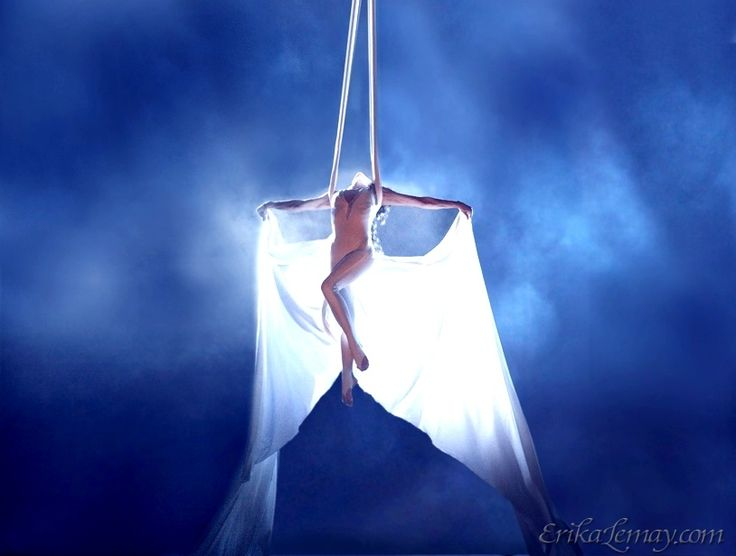
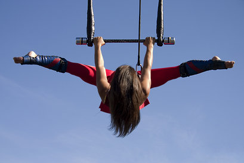
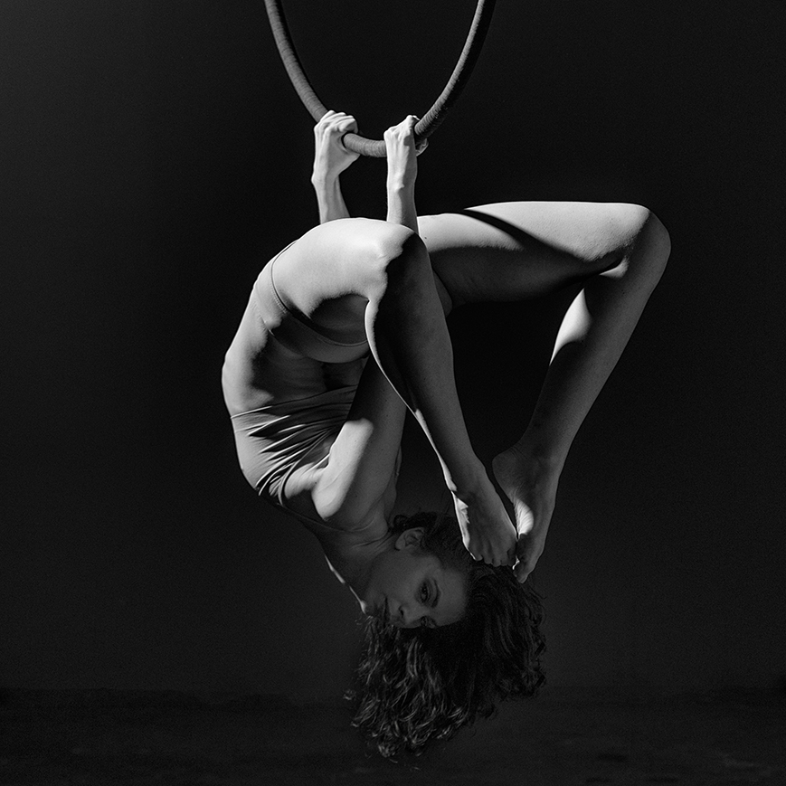

Shop for Aerial Silks
Description
Voltige aerial silks have a low stretch and are narrow. At 1.4m wide these relatively narrow aerial fabrics are a bit easier to climb and wrap than our silks, especially for smaller aerialists and children. The low stretch makes these silks marginally better for beginners.
Shop for Aerial Trapezes
Description
Buy the best trapezes in a range of rope lengths (1m to 4m) and bar widths (55cm - 90cm) from the best manufacturers in the world like Voltige, Barry and Trapeze Rigging. You can even customise your trapeze choosing the bar, rope and whipping colours.Static trapezes are the most popular in our range. We stock narrow and wide bar trapezes with some designed for two people. These all come in a variety of rope lengths so you’re bound to find one that suits your training space. Some of these trapeze come with dressed ropes but most are undressed, leaving you to dress them yourself as you see fit.
Shop for Aerial Straps

Description
Aerial straps are made from a strong cotton or nylon webbing and come in a variety of lengths, from 3m long to 10m long. Aerial straps can come with or without the loops at the end, however all the straps we stock have them. Like all our aerial kit, we only stock from the best names so you’ll find straps from the likes of Barry and Voltige on our shelves. We also stock all the rigging accessories you’ll need such as a hanger for aerial straps and a selection of swivels and carabiners. This type of aerial apparatus requires a lot of strength and resembles aerial, or gymnastic, rings. Because of this it tends to be a male dominated discipline. Many aerial straps acts pre-1972 were very static with performers moving up and down the straps.
Shop for Aerial Hoops
Description
Most of our rings are made from steel tubing but we also have solid steel rings for those who want an heavier aerial hoop. Our 95cm one-point aerial ring is by far our most popular model and is a good size for most female routines. A general rule to find the right size hoop for you is to sit on a chair, and measure from the seat to the top of your head. Then add 10cm to that measurement.